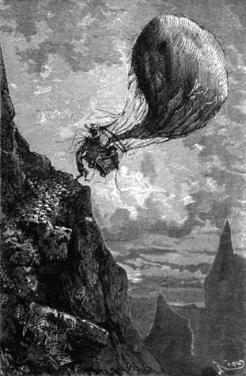

Blíž a blíže k Senegalu. Viktorie klesá více a více. – Vyhazuje se a pořád se vyhazuje. – Marobut Al-Hadži. – Pánové Pascal, Vincent, Lambert. – Soupeř Mohamedův. – Obtížné hory. – Kennedyovy zbraně. – Obratný kousek Joův. – Zastávka nad lesem.
Dne 27. května okolo desíti hodin jevil kraj novou tvářnost; táhlé svahy změnily se v pahorky věstící blízké hory; Viktorii bylo přeletět i pásmo, jež dělí poříčí Nigerské od poříčí senegalského jsouc předělem vodstva, tekoucího do zálivu Guinejského, a vodstva, tekoucího do zátoky Zeleného mysu.
Až k Senegalu jest tato končina africká vyhlášena za nebezpečnou. Doktor Fergusson věděl to ze zpráv svých předchůdců; zakusiliť tisíceré újmy a podstoupili tisícerá nebezpečenstva mezi těmi barbarskými černochy; zdejší osudné podnebí schvátilo většinu soudruhů Mungo-Parkových. Fergusson byl tudíž více než kdy jindy odhodlán nevstupovati na tuto nehostinnou zemi.
Leč neměl ani chvilky klidu; Viktorie klesala očitě; bylo třeba vyhazovati mnoho věcí více nebo méně nepotřebných, zvláště když šlo o to, aby se přenesli přes nějaký hřbet. A to se opakovalo neustále cestou dvou set kilometrů; navystupovali a nasestupovali se do úmoru; balon jako nový balvan Sisyfův klesal ustavičně; jeho podoba málo již nadmutá úžila a prodlužovala se tak, že vítr vydouval v obalu široké prohlubiny.
Kennedyovi nedalo, aby se o tom nezmínil.
„Což má balon trhlinu?“ řekl.
„Nemá,“ odpověděl doktor; „ale guttaperča patrně horkem změkla nebo se rozpustila a vodík uchází dykytou.“
„Jak učiníme přítrž tomu ucházení?“
„To je nemožná věc. Ulehčeme si; toť jediný prostředek; vyhoďme, co lze vyhodit.“
„Ale co?“ otázal se lovec rozhlížeje se po loďce silně již vyprázdněné.
„Zbavme se stanu, jehož váha je dosti značná.“
Joe, kterému svědčil tento rozkaz, vylezl nad kruh, v němž se sbíhaly provazy sítě; odtud bylo mu snadnou věcí odvázati tlusté opony stanové, i vyhodil je.
„To je něco, co učiní šťastným celý kmen černošský,“ prohodil; „z toho se obleče tisíc tuzemců, neboť co se tkne látky, jsou dosti šetrni.“
Balon popovznesl se, ale za nedlouho bylo zřejmo, že se blíží opět k zemi.
„Sestupme,“ navrhl Kennedy, „a podívejme se, lze-li něco učinit s tím obalem.“
„Opakuji ti, Dicku, že nemáme, čím bychom jej opravili.“
„Co tedy počneme?“
„Obětujeme vše, čeho nebude nezbytně třeba; chci se stůj co stůj vyhnouti zastávce v těchto místech; lesy, nad jichž vrcholky právě plujeme, nejsou nikterak bezpečny.“
„Jakže? lvi? hyeny?“ prohodil Joe pohrdavě.
„Cosi horšího, milý brachu: lidé, a to z nejukrutnějších, jací přebývají v Africe.“
„Kdo to řekl?“
„Cestovatelé, kteří tu byli před námi, pak Francouzové, již zabírajíce osadu senegalskou dostali se do nuceného styku s okolními národy; za vlády plukovníka Faidherba podnikány silně výzkumné výpravy do vnitrozemí; důstojníci, jako pánové Pascal, Vincent, Lambert, přinesli vzácné zprávy se svých výprav. Probádali krajiny, prostírající se u ohybu Senegala, kde válka a plen nezůstavily nic než zříceniny.“
„Co se tu sběhlo?“
„Toto. Roku 1854 vzbouřil marabut ze senegalské Futy, Al-Hadži, jenž pravil se býti nadšen s hůry jako Mohamed, veškery kmeny do války proti nevěřícím, to jest Evropanům. Roznesl zhoubu a spoustu mezi řekou Senegalem a jejím přítokem Falemo. Tři fanatické hordy jím vedené zrejdily zemi tak, že neušetřily ani chaty, drancujíce a ubíjejíce; postoupil až do úvalu nigerského k městu Segu, jemuž hrozilo dlouho nebezpečí. Roku 1857 zamířil více na sever a ohrožoval tvrz Médinu, vystavěnou Francouzi na březích řeky; tuto usedlost hájil rek, Pavel Holl, jenž odrážel útoky po několik měsíců nemaje potravy, nemaje skorom střeliva, až přitrhl plukovník Faidherbe a jej vybavil. Al-Hadži a jeho roty přešli pak zase Senegal a vrátili se do Kaarty, kde dále loupili a krev prolévali; v tyto končiny pak uprchl a zde nalezl útulek se svými loupežnými sbory, a věřte mi, že by nebylo radno octnouti se v jeho moci.“
„Neoctneme se v ní,“ pravil Joe, „bychom i musili obětovat svou obuv, aby se Viktorie vznesla.“
„Nemáme daleko k řece,“ odvětil doktor „ale tuším, že náš balon nebude s to, aby nás donesl za ni.“
„Bude vyhráno, jen když se dostaneme na její břehy,“ ozval se lovec.
„O to se právě pokoušíme,“ vece doktor; „ale jedna věc mě znepokojuje.“
„Jaká?“
„Musíme se přenést přes hory, a to bude těžké, poněvadž nemohu zvýšiti vzestupnou sílu balonu, i když vyvodím žár co možná největší.“
„Vyčkejme,“ pravil Kennedy, „a pak uvidíme.“
„Ubohá Viktorie!“ posteskl si Joe, „přilnul jsem k ní jako námořník k lodi; nerozloučím se s ní bez bolesti. Není již taková, jako byla, když jsme se vydali na cestu, ovšem! ale proto se nesmí tupit! Prokázala nám platné služby, a srdce mi bude krvácet, budu-li ji musit opustiti.“
„Upokoj se, Joe; opustíme-li ji, opustíme ji z donucení. Bude nám sloužiti, až jí dojdou síly nadobro. Žádám na ní jen dvacetčtyři hodiny ještě.“
„Vysiluje se,“ pravil Joe pozoruje balon, „chřadne a život z ní prchá. Ubohá vzducholoď!“
„Nemýlím-li se,“ podotekl Kennedy, „vidím na obzoru hory, o nichž jsi se zmínil, Samuele.“
„Jsou to ony,“ odtušil doktor prohlédnuv si je dalekohledem, „zdá se mi, že jsou velmi vysoké, bude nám krušno dostati se přes ně.“
„Což se jim nemůžeme vyhnouti?“
„Nemyslím, Dicku; viz, jak ohromné prostranství zaujímají: téměř polovic obzoru!“
„Ba zdá se, jako by se kolem nás stahovaly,“ řekl Joe; „přibývá jich na pravo i na levo.“
„Musíme přes ně stůj co stůj.“

Neohrožený jonák přidržoval se okraje loďky.
Tyto překážky tak nebezpečné zdály se blížiti s náramnou rychlostí, či ať lépe díme, vítr velice prudký hnal Viktorii k ostrým štítům. Buď jak buď, musili vystoupiti, ač nechtěli-li naraziti.
„Vyprázdněme schránku na vodu,“ pravil Fergusson; „ponechme si jen tolik, kolik potřebí na den.“
„Tak!“ zvolal Joe.
„Stoupá-li balon?“ otázal se Kennedy.
„Trochu, na padesát stop,“ odpověděl doktor nespouštěje očí s tlakoměru. „Ale to nestačí.“
Vysoká temena blížila se vskutku cestovatelům, že se podobalo, jako by se na ně řítila: strměla ještě vysoko nad ně, převyšujíce je aspoň o pět set stop.
Zásoba vody pro dmuchavku svržena rovněž; ponechali si pouze několik litrův; ale to vše ještě nepostačovalo.
„A přece musíme přes ně,“ pravil doktor.
„Shoďme schránky, když jsme je vyprázdnili,“ navrhl Kennedy.
„Shoďte je.“
„Tak!“ odtušil Joe. „člověku je bolno, když jde kus za kusem.“
„Tobě pak, Joe, ať nepřipadne obětovat se zase jako ondy! Staň se, co staň, přísahej mi, že nás neopustíš.“
„Buďte bez starosti, neopustíme se.“
Viktorie vznesla se do výše asi dvacíti sáhů; leč horský hřbet posud nad ni vyčníval. Byl to hřeben dosti rovný, jímž končila skalní stěna kolmo vyvstávající. Převyšoval cestovatele ještě o více než dvě stě stop.
„Za deset minut,“ pravil si doktor v duchu, „roztříští se naše loďka o tyto skály, nepodaří-li se nám vyšvihnout se nad ně!“
„Nuže, pane Samuele?“ otázal se Joe.
„Ponechej toliko zásobu pemmikanu a vyhoď všecko to maso, které tíží.“
Balonu ubylo zase váhy asi padesáti liber; povznesl se velmi patrně; ale málo na tom sešlo, poněvadž nevystoupil nad úroveň pohoří. Postavení bylo děsné; Viktorie ujížděla nadmíru rychle; bylo na bíledni, že se rozbije na kusy, srážka byla by v pravdě strašlivá.
Doktor rozhlížel se po loďce.
Byla takměř prázdna.
„Bude-li třeba, Dicku, buď hotov obětovati své zbraně.“
„Obětovat své zbraně?“ opáčil lovec s pohnutím.
„Příteli, požádám-li tě za to, nebude jiného zbytí.“
„Samuele! Samuele!“
„Tvé zbraně, tvé zásoby olova a prachu mohou nás státi život.“
„Blížíme se!“ zvolal Joe, „blížíme se!“
Deset sáhů! Hora převyšovala Viktorii ještě o deset sáhů. Joe uchopil pokryvky a svrhl je s loďky. Nezmíniv se o tom Kennedyovi ani slůvkem, vyhodil rovněž několik váčků kulek a olova.
Balon se vznesl; vystoupil nad nebezpečné témě, a jeho vrchní pol zastkvěl se slunečními paprsky. Avšak loďka nalézala se ještě o něco pod úrovní skal, o něž musila se nevyhnutelně roztříštiti.
„Kennedy! Kennedy!“ vzkřikl doktor, „vyhoď zbraně, sice je po nás veta.“
„Počkejte, pane Dicku!“ zvolal Joe, „počkejte!“
A Kennedy otočiv se viděl Joa, an mizí za krajem loďky.
„Joe! Joe!“ vykřikl.
„Nešťastník!“ zaúpěl doktor.
Hřeben hory byl na tom místě zšíří asi dvacíti stop, a na druhé straně mělo úbočí nenáhlejší sklon. Loďka octla se právě v úrovni této plošiny dosti rovné; přesmekla se přes půdu složenou z ostrých kamenů, které pod ní skřípaly.
„Přejíždíme! přejíždíme! přejeli jsme!“ ozval se hlas, jehož zvuky rozbušily Fergussonovi srdce radostí.
Neohrožený jonák přidržoval se rukama spodního kraje loďky; běžel pěšky po hřebeně, ulehčuje takto balonu o celou svoji váhu; ba byl nucen pevně se k němu upínat, neboť se mu div nevymkl.
Když se ocitl na protějším svahu a před ním rozevřela se propast, vyhoupl se Joe napjav mocně síly, zachytil se provazoví a vylezl zase ke svým druhům.
„Nic tak těžkého,“ pravil.
„Statečný Joe, příteli!“ zvolal doktor jsa všecek dojat.
„Ó! co jsem učinil,“ odpovědě Joe, „neučinil jsem pro vás, ale pro karabinu páně Dickovu! Byl jsem jí tím povinen od té doby, co vyrazila duši z těla tomu Arabovi! Platím rád dluhy, a teď jsme vyrovnáni,“ dodal podávaje lovci oblíbenou jeho zbraň. „Bylo by mě velice bolelo, kdybyste se byl s ní rozloučil.“
Kennedy stiskl mu silně ruku nejsa mocen slova.
Viktorii nezbývalo pak než sestupovati; to jí bylo snadno; octla se brzy zase asi na dvě stě stop nad zemí a byla pak v rovnováze. Půda zdála se býti rozervána; jevila četné vypnuliny, jimž bylo velmi těžko se vyhnouti v noci s balonem, který již neposlouchal. Večer nastal kvapem, a jakkoli se mu nehrubě chtělo, doktor byl přece nucen odhodlati se k zastávce až do zítřka.
„Vyhledáme si příznivé místo a zastavíme se,“ pravil.
„Ach!“ odtušil Kennedy, „konečně jsi se rozhodl.“
„Ano, přemýšlel jsem dlouho o záměru, jejž provedeme; je teprva šest hodin večer, budeme míti kdy. Spusť kotvy, Joe.“
Joe poslechl a dvé kotev viselo pod loďkou.
„Pozoruji širé lesy,“ ujal se opět slova doktor; „pojedeme nad samými jich vrcholky a zachytíme se v některém stromě. O živý svět nesvolil bych k tomu, abychom strávili noc na zemi.“
„Což bude lze sestoupit?“ otázal se Kennedy.
„Nač? Pravím vám ještě jednou, že by bylo nebezpečno se rozcházet. Kromě toho je mi třeba vaší pomoci k nesnadné práci.“
Viktorie, plynoucí nad korunami nesmírných lesů, stanula brzy náhlým rázem; její kotvy uvázly; s večerem utichl vítr; i vznášela se takměř nehybně nad širou zelenou plání, složenou z vrcholků sykomorového lesa.